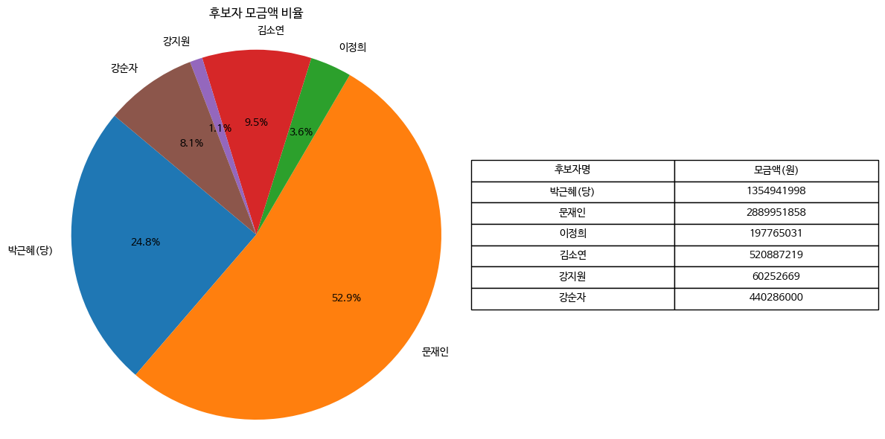
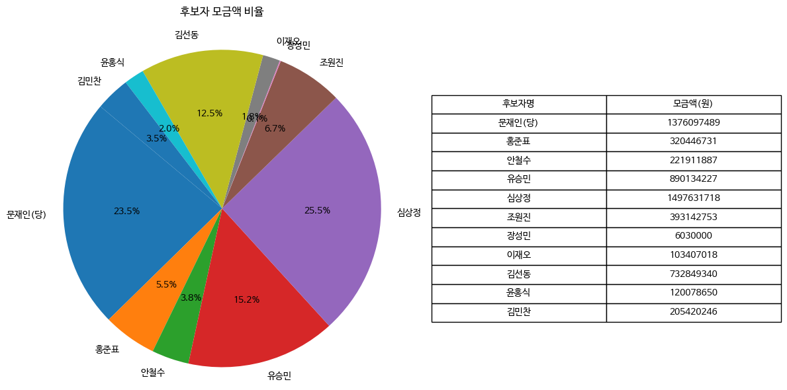
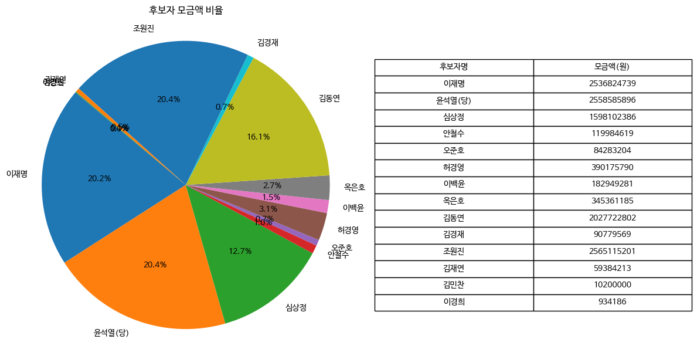

-1952년 2월 2일 대구광역시 출생
-대한민국 제 18대 대통령이며, 대한민국 최초 부녀대통령이자 대한민국 헌정 사상 최초의 여성대통령이자, 최초로 탄핵을 당해 임기를 채우지 못하고 퇴진한 대통령이다.
-재임기간: 2013년 2월 25 ~ 2017년 3월 10일
-후원모금액: 1354941998원(후보 중 2위)
대한민국 19대 대통령 문재인

-1953년 1월 24일 경상남도 거제시 출생
-대한민국 제 19대 대통령이며, 18대에 3.53% 차이로 졌지만, 박근혜 – 최순실 게이트로 인해 대통령에서 파면된 이후 이루어진 조기 대선 때 41.08% 득표율로 당선된 대통령이다. 2위와 최대 격차로 당선되었다.(557만 표차)
-임기 중에 남북 정상회담를 최다 개최를 했고, COVID-19 사태를 처음부터 겪은 대통령이다
-후원모금액: 1376097489원(후보 중 2위)
대한민국 20대 대통령 윤석열

-1960년 12월 18일 서울특별시 출생
-대한민국 제 20대 대통령이며, 최초 서울대 법대 출신 대통령이자, 서울특별시 출신 대통령이며, 최초의 검사 출신 대통령이다. 또한 대한민국 정부 수립 이래 역대 모든 선거를 통틀어 하나의 선거에서 가장 많은 득표로 당선된 사람이자, 가장 적은 득표차로 당선된 대통령이다.(0.73%p)
-집무실을 청와대에서 용산으로 새롭게 이전하고, 대통령 관저를 다른 곳으로 이전한 최초의 대통령이다.
-후원모금액: 2558585896원(후보 중 2위)